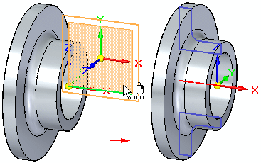
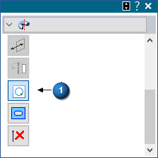
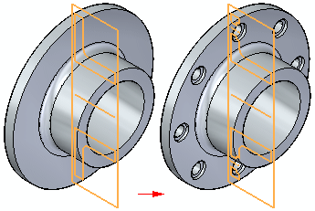

Working with Live Sections
You use the Live Section command to create a 2D cross-section on a plane through a 3D part. For example, you can select one of the principal planes on the base coordinate system as the plane for a live section.

Live sections can make it easier to visualize and edit certain types of parts, such as parts that contain revolved features. You can then edit the 2D elements of the live section to modify 3D model geometry.

Creating live sections
You can select a planar face, reference plane, or principal plane on a coordinate system as the plane for the live section. When you select the plane, a live section is created, similar to a section view in a drawing. When the live section passes through a procedural feature, such as a hole, an edge set is created.
An entry for the live section is added to the Live Sections collector in PathFinder.
Automatic creation of live sections
When creating a revolved extrusion or cutout, use the Create Live Section option (A) to create a live section upon feature completion. The option is on by default.

All sketch dimensions migrate to the live section.
Editing live sections
You edit a live section using the Select tool and the 2D steering wheel editing handle. You can edit individual elements or you can edit the entire live section.
-
Editing 2D elements in a live section to modify the 3D model
When you select a 2D element in a live section, the 2D steering wheel editing tool appears. You can use the handles on the 2D steering wheel to move or rotate the live section element to modify 3D model geometry. If the live section element you select is an edge set created from a procedural feature, such as a hole, the editing handle for the procedural feature is also displayed.
You can also place PMI dimensions on the 2D elements of a live section and then edit the dimension value to modify the model.
Note:When moving a live section element using the 2D steering wheel edit tool or a PMI dimension, the relationships identified in the Design Intent panel are used to preserve or ignore the design intent you have previously built into the model as you make the move.
-
Editing the entire live section
You can select the entire live section using PathFinder or QuickPick. You can then use the steering wheel to move or rotate the entire live section. When you move or rotate the entire live section, 3D model geometry is not modified. The live section recalculates at its new position. This can be useful when you have modified the 3D model using other methods, such that the live section is no longer positioned where you want it.
Displaying live sections
You can use the check box adjacent to a live section entry in PathFinder to show or hide a live section in the graphics window. You can use the check box adjacent to the Live Sections collector to display or hide all the live sections.
You can use the Live Section Colors section on the Colors page of the Solid Edge Options dialog box to specify the colors you want to use for the edges, centerlines, and regions for live sections.
Model editing and live section update
The live section automatically updates when you add or remove features, or directly edit the 3D model. For example, if you add a pattern of holes to a synchronous model, the live section automatically updates.

Live sections in an assembly
You can edit a 2D element on a live section to modify a part in the context of an assembly. You can use the keypoints on adjacent parts to modify the live section element with respect to other parts in the assembly.
You can use commands on the shortcut menu to control the display of live sections on a selected part.